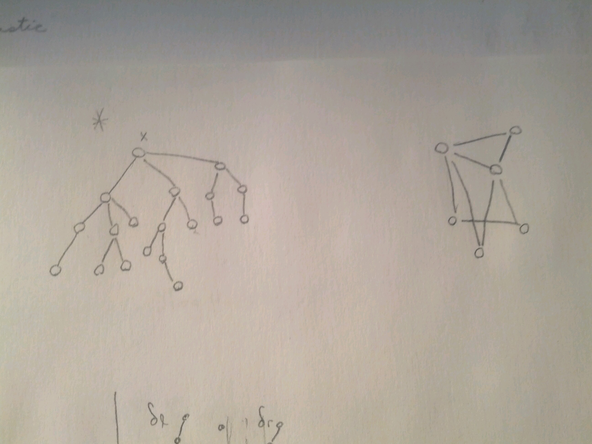
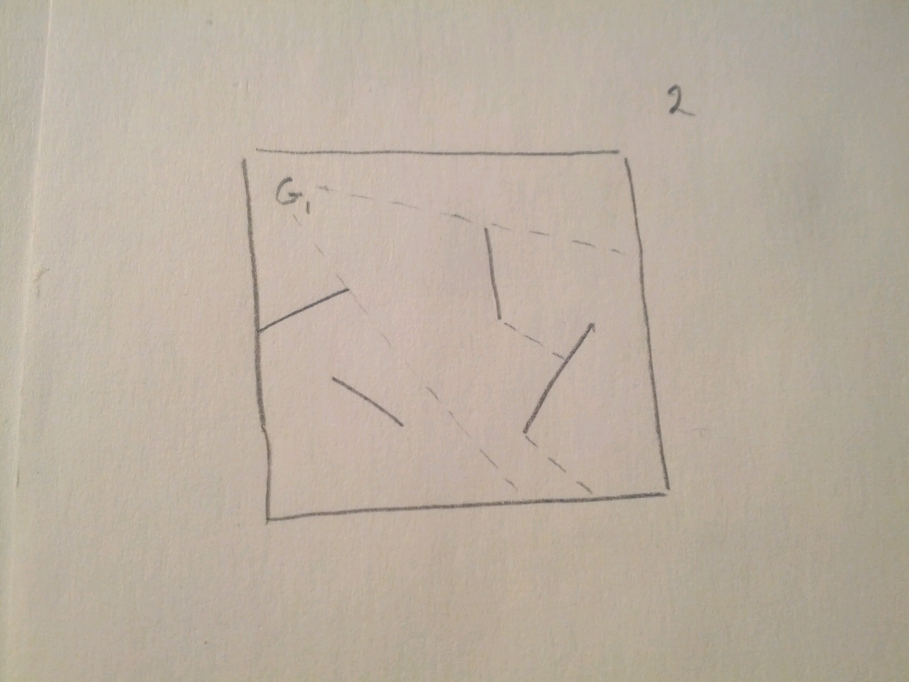

Come to the orchard in Spring
- There is light, and wine,
- and sweethearts in the
- pomegranate flowers
If you do not come, these do not matter
If you do come, these do not matter
Happy Birthday Rumi
Longest Path in a Tree¶
BFI algorithm: \(O(n^2)\)
D&C algorithm:¶

Max_Tree_Path(T, x):
if T==x: # single vertex T
# longest contained path
L_C_P = {x}
# longest root path
# (longest path in T with one end at x)
L_R_P = {x}
return L_C_P, L_R_P
else:
let T_1, ..., T_k be the subtrees
with roots x_1, ..., x_k (neighbours of x)
let CP_i, RP_i <- Max_Tree_Path(T_i, x_i) for i=1,...,k
max_subtree_contained_path = max{CP_i} # for 1<=i<=k
max_path_through_root = max{RP_i} + x + 2nd_mac{RP_i} # over i
L_C_P = max{max_subtree_contained_path, max_path_through_root}
L_R_P = max{RP_i} + x # over i
Complexity:
\(Time(T(T,x)) = Time(T(T_1,x_1)+...+T(T_k,x_k))\)
- We call the function once for each vertex in the tree. \(=n\)
- The max calls can be made to be simply a single comparison for each call.
- Each call creates constant work \(O(1)\)
so, D&C algorithm \(~ O(n)\)
D&C algorithm is not limited to trees either. We can solve a graph of this form:
Computational Geometry¶
Guards
\(n\) points in \(x-y\) plane
- find the 2 closest paths
The naive algorithm (BFI) \(~O(n^2)\)
D&C approach¶
- split into 2 sets of \(\frac{n}{2}\) pairs
- solve recursively on each side
- min distance on left = \(\delta_l\)
- min distance on right = \(\delta_r\)
- take the min of \(\{\delta_l,delta_r\}\)
- draw rectangle around center line of that width
- consider the points inside that rectangle.